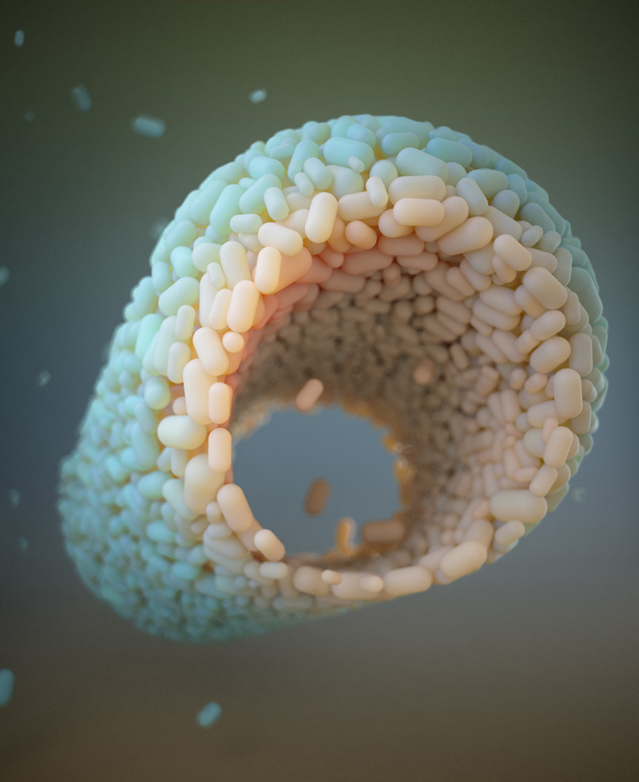
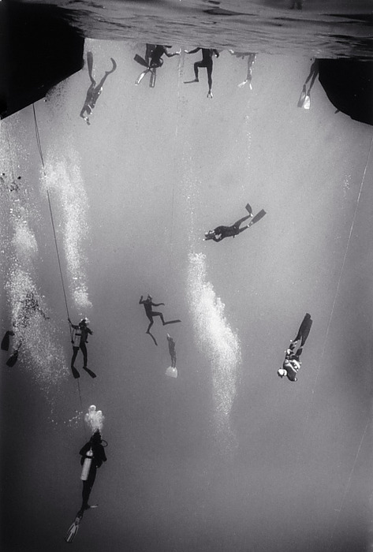

Πανέτοιμοι για το πάρτυ !!!!!!!!!!!!
| |
Απο τις εκκαθαριστικές επιχειρήσεις της βραζιλιάνικης αστυνομίας στις φαβέλες του Ρίο.
| |
Μεγιές, μεγιές....
Είμαστε εις την ευχάριστον θέσην να σας ανακοινώσουμε την συνεργασία στο Lost Bodies Blog με το Fanzine/εκδοτικό οίκο "Τυφλόμυγα" !!!!!
Υ.Γ. Την φωτό μας την έστειλε ο George Naks.
| |
MICHAEL GIRA : ΤΙΜΩΡΙΑ
Ο καθένας τους έχει ένα κρυφό κίνητρο. Απαιτούνται χρόνια αυτοσυγκέντρωσης για να ξεριζώσεις όλα τα ψέματα. Κάθε ιδιότροπη συμπεριφορά,κάθε τετριμμένη απάντηση είναι προμελετημένη για ένα συγκεκριμένο σκοπό. Η μόνη τίμια συμπεριφορά είναι η άμεση φυσική αντίδραση στον πόνο. Τον πραγματικό πόνο – όχι τον αισθηματικό ή τον ψυχικό – αυτόν που προκαλείται από την άμεση φυσική βία. Για κάποιο λόγο, ο ένας η ο άλλος βρίσκεται συνήθως στη διαδικασία κατάστρωσης σχεδίου επίθεσης κατά του εχθρου(του άλλου). Το μοναδικό πράγμα που τους αποτρέπει από την διάπραξη του εγκλήματος είναι ο φόβος της τιμωρίας. Από τη στιγμή που δεν μπορούν να εκφράσουν τη βία τους με κάποιο άμεσο τρόπο, έχουν αναπτύξει μεθόδους για να κάνουν τη βία πιο αφηρημένη και περίπλοκη, καθυστερώντας το τελικό ξέσπασμα μέχρι τη στιγμή που γίνεται ανεξέλεγκτη.
Δίχως ένταση ή επιθυμία τα πάντα εξισώνονται. Κατ’ αυτό τον τρόπο παίζουν με τη βία τους μία παρτίδα σκάκι, προκειμένου να υπάρχουν για τη βία.
(1984) | |
Για τον θάνατο του avant-garde rocker που πέθανε στα 69 του χρόνια.
LONG LIVE THE CAPTAIN BEEFHEART
The Party Of Special Things To Do :
The camel wore a nightie...
At the party of special things to do
When the stiff wind blows
The flag don't wiggle
In the party of special things to do
I met the Ace of Love
She took me to her plantation
For love without separation
In the party of special things to do
I could happen to me
It could happen to you
I met the Ace of Love
She said I want you to go
To a party of special things to do
And when you're through
I'll be right here waiting for you
Here take these sparks
So that my distant cousins can get along with you
Watch out for the Mirror Man
And Elixir Sue
Spoken: When I got to the party of special things to do it wasn't hard
to find Elixir Sue. I met all the cars, the wild cards, the One-Eye
Jills, the Red Queen. She turned her head, you know what I mean, she
turned it back and said, "I got a brand new game I want to lay on
you..."
I met them all
At the party of special things to do
When I was done
I was far from through
I returned to the Ace of Love
Now wouldn't you?
I met them all
I met them all
I met them all
At the party of special things to do
The camel wore a nightie
At the party of special things to do. . .
The camel wore a nightie...
At the party of special things to do
When the stiff wind blows
The flag don't wiggle
In the party of special things to do
I met the Ace of Love
She took me to her plantation
For love without separation
In the party of special things to do
I could happen to me
It could happen to you
I met the Ace of Love
She said I want you to go
To a party of special things to do
And when you're through
I'll be right here waiting for you
Here take these sparks
So that my distant cousins can get along with you
Watch out for the Mirror Man
And Elixir Sue
Spoken: When I got to the party of special things to do it wasn't hard
to find Elixir Sue. I met all the cars, the wild cards, the One-Eye
Jills, the Red Queen. She turned her head, you know what I mean, she
turned it back and said, "I got a brand new game I want to lay on
you..."
I met them all
At the party of special things to do
When I was done
I was far from through
I returned to the Ace of Love
Now wouldn't you?
I met them all
I met them all
I met them all
At the party of special things to do
The camel wore a nightie
At the party of special things to do. . .
[download mp3: party_of_special_things_to_do] | |
Ο μέσος όρος ζωής θα αυξανόταν αλματωδώς αν τα πράσινα λαχανικά μύριζαν εξίσου ωραία με το μπέικον.
| |
Όποιος τον τελικό σκοπό της φύσης έχει κατανοήσει, αυτός έχει αντιληφθεί ότι εύκολα αγγίζει κανείς το όριο των καλών πραγμάτων και εύκολα τα κατακτά. Η τύχη είναι άστατη αλλά εκείνα που τελούν υπό τον έλεγχό μας δεν εξουσιάζονται από κανέναν. Όσο για την τύχη, είναι καλύτερο να ατυχήσει κανείς σε κάτι που το σκέφτηκε σωστά παρά να έχει επιτυχία σε μία πράξη απερίσκεπτη.
Επίκουρος
| |
Κάποτε ο Βίας ο Πριηνεύς ταξίδευε με πλοίο και μεταξύ των συνταξιδιωτών του ήσαν αρκετοί γνωστοί παλιάνθρωποι. Όταν συνάντησαν μεγάλη θαλασσοταραχή και το πλοίο κινδύνεψε να βυθιστεί, όλοι αυτοί άρχισαν να προσεύχονται ζητώντας τη βοήθεια των θεών. Τότε ο Βίας τους είπε : «Πάψτε μωρέ, μη πάρουν είδηση οι θεοί ότι είστε εδώ γιατί θα μας πνίξουν».
| |
Μερικά από τα μεγαλύτερα επιτεύγματα στον κόσμο έχουν επιτευχθεί από ανθρώπους που δεν ήταν αρκετά έξυπνοι για να αντιληφθούν ότι ήταν ακατόρθωτα.
| |
Ένας άντρας έφερε στο σπίτι ένα γάιδαρο για να τους βοηθήσει στις δύσκολες δουλειές. Μόλις τον είδε η γυναίκα του τα έβαλε μαζί του:
– Ε, δεν μπορούμε να έχουμε και γάιδαρο στο σπίτι! Μόνο αυτός μας έλειπε! Πού θα κοιμάται;
– Στο δωμάτιο μας.
– Με μας! Και τι θα γίνει με τη μπόχα;
– Θα τη συνηθίσει.
| |
Ο χρόνος που ερημώνει τις πόλεις εμπλουτίζει τη γλώσσα.
Jorge Luis Borges
| |
Τα θέλουμε όλα για όλους.
| |
H ομορφιά είναι θέμα υποκειμένου όχι αντικειμένου. Για κάποιον που βρίσκεται στην παραλία, η φουρτουνιασμένη θάλασσα το σούρουπο προκαλεί το αίσθημα της άγριας ομορφιάς, γι’αυτόν που βρίσκεται σε μία βάρκα, προκαλεί το αίσθημα του άγριου τρόμου. H αισθητική εμπειρία, επομένως, είναι υποκειμενική: μας αρέσει δεν μας αρέσει, ακριβώς όπως όταν γευόμαστε ένα φαγητό. H αίσθηση της ομορφιάς είναι ακριβώς όπως η αίσθηση της γεύσης: περί ορέξεως δηλαδή, κολοκυθόπιτα.
Mε πολύ δόση ειρωνείας, τη λύση στο πρόβλημα της αντικειμενικής αισθητικής κρίσης, έδωσε η γεύση, ή μάλλον το γούστο. H λέξη γούστο έλκει την ετυμολογία της από τη γεύση, ενώ και τα δύο ενώνονται στη γαστέρα, δηλαδή στην κοιλιά. Tο να πει κανείς ότι η νεότερη αισθητική φιλοσοφία, περνάει –όπως ο έρωτας– από την κοιλιά, ακούγεται παράδοξο, πλην όμως είναι απόλυτα αληθινό. Στα ελληνικά, μιλάμε για καλό γούστο, δηλαδή για φίνες προτιμήσεις, γεύση και γούστο έχουν ετυμολογικά κοινή ρίζα στην κοιλιά. Στα αγγλικά, όμως, όπως και σε άλλες γλώσσες, γεύση και γούστο εκφράζονται με μία λέξη: taste, goût, gusto, Geschmack. Aπό τη μια μεριά, taste σημαίνει υποκειμενική γεύση που αναφέρεται στο φαγητό, από την άλλη σημαίνει καλό γούστο, που δεν έχει να κάνει με φαγητό αλλά με τέχνη ή καλλιεργημένη άποψη η οποία ως τέτοια προβάλλεται ως αντικειμενική. Προφανώς υπάρχει σχέση και προφανώς υπάρχει μια υποδόρια αντίφαση όταν οι φιλόσοφοι χρησιμοποιούν τη λέξη taste.
Για μένα πάντως η αντίφαση αυτή αντανακλά μια βαθύτερη σχέση που υπάρχει ανάμεσα στο φαγητό και την αισθητική. H εκτίμηση για την τέχνη, η αισθητική άποψη που έχουμε για την καλλιτεχνική έκφραση “περνάει” κυρίως από την “κοιλιά”, ή πιο σωστά από το στόμα. Kι αυτό είναι λογικό, διότι τις πρώτες εμπειρίες για το τι είναι καλό και κακό, για το τι μας αρέσει ή όχι, τις νιώσαμε σαν μωρά, όταν οι τροφές πέρασαν πρώτα από τα χείλη μας, ακούμπησαν πάνω στους γευστικούς κάλυκες της γλώσσας μας, κατόπιν πέρασαν στο πίσω μέρος του στόματος και κατρακύλησαν στο στομάχι μας αφήνοντας μια ευχάριστη ή δυσάρεστη επίγευση. H πρώτη μας αισθητική εμπειρία, και η πρώτη μας κρίση για το άν κάτι είναι καλό ή κακό, ήταν αυτή της τροφής. Επομένως η σχέση ανάμεσα στο φαγητό και την αισθητική είναι φυσική και αντανακλάται ασυνείδητα στον τρόπο με τον οποίο η ίδια λέξη χρησιμοποιείται για να εκφράσει συγχρόνως γεύση και γούστο. Όχι μόνο δεν υπάρχει διαφορά ανάμεσα στο γευστικό και το αισθητικό γούστο, αλλά το δεύτερο προέρχεται από το πρώτο.
Όμως, η σχέση είναι ακόμα βαθύτερη. H γεύση δεν σχετίζεται μόνο με το αισθητικά καλό ή κακό, σχετίζεται και με τη γνώση του ηθικά καλού και κακού. Ο Auster ισχυρίζεται ότι δεν είναι τυχαίο ότι στα Λατινικά, η λέξη sapore σημαίνει γεύση και συνδέεται με τη λέξη sapere που σημαίνει γνώση και παραπέμπει στην γνώση που απέκτησαν οι πρωτόπλαστοι γευόμενοι τον απαγορευμένο καρπό. H πρώτη μας αίσθηση περί καλού και κακού προήλθε από τη γεύση ενός μήλου. Mπορεί οι αρχαίοι να θεωρούσαν την όραση ως την βασική πηγή γνώσης, αλλά η πρωτογενής πηγή φαίνεται πως είναι η γεύση.
| |
Τρεις φράσεις που θα σε βοηθήσουν στη ζωή:
1)"κάλυψέ με", 2)"καλή ιδέα, αφεντικό!", 3)"Έτσι το βρήκα όταν ήρθα".
Homer Simpson
| |
Pornography is a complex daydream in which activities, usually but not necessarily overtly sexual, are projected into written, pictorial, or aural material to induce genital excitement in an observer. No depiction is pornographic until an observer’s fantasies are added; nothing is pornographic, per se.
Η πορνογραφία είναι μια ονειροπόληση περίπλοκη σε δραστηριότητες, που συνήθως αφορούν το σέξ, η προβολή γίνεται στο γραπτό, οπτικό, ακουστικό ή λεκτικό υλικό για την πρόκληση της έξαψης των γεννητικών οργάνων στον παρατηρητή. Καμία όμως παράσταση δεν είναι πορνογραφική μέχρι να προστεθούν οι φαντασιώσεις του παρατηρητή. Τίποτα δεν είναι πορνογραφικό, από μόνο του.
Perversion: The Erotic Form of Hatred, by Robert J. Stoller, M.D.
| |
I have come to believe that the whole world is an enigma, a harmless enigma that is made terrible by our own mad attempt to interpret it as though it had an underlying truth.
Έχω αρχίσει να πιστεύω ότι όλος ο κόσμος είναι ένα αίνιγμα, ένα αβλαβές αίνιγμα που γίνεται τρομερό από τη δική μας τρελή προσπάθειά να το ερμηνεύσουμε σαν να είχε μια ελλοχεύουσα αλήθεια.
Umberto Eco
| |
I'm selfish, impatient and a little insecure. I make mistakes, I am out of control and at times hard to handle. But if you can't handle me at my worst, then you sure as hell don't deserve me at my best.
Είμαι εγωίστρια, ανυπόμονη και λίγο επισφαλής. Κάνω λάθη, είμαι εκτός ελέγχου και κατά καιρούς είναι δύσκολο να με κουμαντάρω. Αλλά εάν δεν μπορείς να με χειριστείς στα χειρότερά μου, τότε, διάολε, δεν σου αξίζω στα καλύτερα μου.
Marilyn Monroe
| |
Οι καιροί έχουν αλλάξει. Μέχρι και τα παιδιά των καλών οικογενειών έχουν πέσει με τα μούτρα σε κινήματα όπως αυτά της απαγόρευσης του αλκοόλ ή του καπνίσματος. Φαίνεται ανόητο να σκέφτεται κανείς την ελκυστική καθαρότητα ενός σταχτοδοχείου από μπαμπού, την αισθητική αυστηρότητα του σωστά ψημένου τσαγιού ή ένα φλιτζάνι ζεστό σάκε.
Ναγάι Καφού
| |
Κάποιοι ρωτούν για το µυστικό του µακροχρόνιου γάµου µου. Διαθέτουµε χρόνο να πηγαίνουµε δυο φορές την εßδοµάδα σ' ένα εστιατόριο. Λίγο φως των κεριών, δείπνο, χαµηλή µουσική και χορό. Εκείνη πηγαίνει τις Τρίτες, εγώ τις Παρασκευές.
Henny Youngman
| |
Αν ο Θεός δεν ήθελε να αυνανιζόμαστε, θα έκανε τα χέρια μας πιο κοντά.
George Carlin
| |
Μην πίνεις όταν οδηγείς. Μπορεί να χυθεί το ποτό σου.
| |
Αν η στρατιωτική διοίκηση ήταν καλά οργανωμένη, δεν θα υπήρχε ο άγνωστος στρατιώτης.
Louis Jouvet
| |
Όταν νίπτει κανείς τας χείρας του σε μια σύγκρουση μεταξύ ισχυρών και αδυνάτων, δεν σημαίνει ότι μένει ουδέτερος, σημαίνει ότι παίρνει το μέρος των ισχυρών.
Paulo Freire
| |

Λοιπόν, αυτός που γύρευα είμαι.
Οδυσσέας Ελύτης
| |
Πράος δεν είναι εκείνος που δεν εκνευρίζεται. Όποιος δεν θυμώνει ποτέ είναι ηλίθιος. Πράος είναι αυτός που θυμώνει όταν πρέπει.
Αριστοτέλης - Ηθικά Νικομάχεια
| |
Την ματιά στον κόσμο μπορεί να την εμποδίσει κανείς με μια εφημερίδα.
Lec Stanislaw Jerzy
| |
Το να προσπαθήσεις είναι το πρώτο βήμα προς την αποτυχία.
Homer Simpson
| |
Οι σύμβουλοι επιχειρήσεων έχουν κύρος επειδή δεν είναι τόσο χαζοί για να δουλεύουν εκεί που δουλεύετε εσείς.
Scott Adams
| |
Πολλοί άνθρωποι μπερδεύουν την κακή μνήμη με καθαρή συνείδηση.
| |
Αυτό που με κρατάει στη ζωή είναι ότι δε θέλω να χάσω το τέλος του κόσμου.
Francesco Tullio Altan
| |
Να κάνεις το καλό σαν άνθρωπος που μπορεί να κάνει το κακό. Ούτε ανοήτως, ούτε πομπωδώς, ούτε μετ΄ ευσεβείας, ούτε από φόβο.
Πωλ Βαλερύ
| |
Τι πρέπει να κάνεις για να αισθανθείς απαίσια σαν καλλιτέχνης
(ή, τι να μήν κάνεις με τίποτα)
1. Να συγκρίνεις τον εαυτό σου συνεχεία με άλλους δημιουργούς.
2. Να μιλάς στην οικογένειά σου για το τι θέλεις να κάνεις, και να περιμένεις να σε ενθαρρύνουν κιόλας.
3. Να βασίζεις την επιτυχία ολόκληρης της καριέρας σου σε μία και μόνο
δημιουργία.
4. Να μένεις σε αυτά που γνωρίζεις.
5. Να υποτιμάς το ένστικτό σου.
6. Να αφήνεις να σε καθοδηγούν τα χρήματα.
7. Να υποκύπτεις στην κοινή γνώμη.
8. Να δημιουργείς πράγματα που θα τα θεωρούνε θαυμάσια στην οικογένειά σου.
9. Να κάνεις οτιδήποτε ζητάει ο πελάτης/ ο επιχειρηματίας/ το αφεντικό/ή ο
Επενδυτής.
10. Να βάζεις ακατόρθωτους/ απίστευτους στόχους, που πρέπει να γίνουν
όπωσδήποτε.
| |
Όλοι στο μεγαλειώδες ΕΟΡΤΑΣΤΙΚΟ και χορταστικό Live.
Χριστούγεννα με το αγαπημένο σας συγκρότημα :) :)....
| |
I want
To do with you what spring does with the cherry trees.
Θέλω να κάνω μαζί σου, αυτό που η άνοιξη κάνει με τις κερασιές
Pablo Neruda (Twenty Love Poems and a Song of Despair)
| |

Οι βιταμίνες βρίσκονται ακριβώς ανάμεσα από τις αλφαμίνες και τις γαμαμίνες...
| |
Το μόνο που ζητάω είναι να μπορέσω να αποδείξω ότι τα λεφτά δεν μπορούν να με κάνουν ευτυχισμένο.
Spike Milligan
| |
Ο πραγματικός τρόμος είναι να ξυπνήσεις ένα πρωί και να ανακαλύψεις ότι οι συμμαθητές σου από το Γυμνάσιο κυβερνάνε τη χώρα.
Kurt Vonnegut
| |
Υπάρχουν πολιτικοί που δεν τους άλλαξαν χαρακτήρα τα βουλευτιλίκια και τα υπουργιλίκια. Kαραγκιόζηδες ήταν και καραγκιόζηδες παρέμειναν...
| |
Επιτέλους!!!!!!!
Από τις εκδόσεις τυφλόμυγα!!!!! Ένα βιβλίο που θα σας ανοίξει τα μάτια.
Αυτό που όλοι περιμένατε!!!!!!!!
Το λογοτεχνικό διαμάντι που όλοι θα μιλήσουν για αυτό τη προηγούμενη χρονιά.
Το βιβλίο των βιβλίων!!!!!!
Ένα καινοτόμο δώρο για όλη την οικογένεια, με στίχους, διηγήματα, ποιήματα + “Το αντιμανιφέστο του underground”. Σε όλα τα μεγάλα βιβλιοπωλεία !!!!!
Για περισσότερες πληροφορίες και για όσους το θέλουν από την πηγή :
Εκδόσεις Τυφλόμυγα
Αραχώβης 15, Εξάρχεια, Αθήνα
Τηλέφωνο: 210 3637164 από τις 11:00 – 14:00
Αντί-Μανιφέστο του underground
Αυτό μας έλειπε τώρα...
Το underground δεν είναι μια σχολή, δεν είναι μια παρέα, δεν είναι μια ομάδα, δεν είναι ένα κίνημα, δεν είναι ένα κείμενο, δεν είναι καριέρα, δεν είναι στη βιτρίνα για να το καταναλώσεις, δεν είναι ένα προϊόν που σου πλένουν το μυαλό και σε υποχρεώνουν να το καταπιείς, δεν έχει ανάγκη από αυθεντίες, είναι από τη φύση του διαλυτικό, είναι ολοζώντανο, ανατρεπτικό με κοφτερή κριτική, δημιουργώντας συνεχώς ρήγματα στη λογική.
Underground είναι το να μην κρύβεις αυτό που έχεις να πεις, και να το πεις με τον τρόπο που εσύ επιλέγεις, αδιαφορώντας για την λογοκρισία, και τον νυσταλέο κοινό νου, για την απήχηση ή ακόμα χειρότερα για την εμπορικότητα αυτού που θα πεις. Underground είναι το να εκφράζεσαι ελεύθερα, με απόλυτη ανεξαρτησία και να επιλέξεις εσύ τον τρόπο διανομής, παραγωγής, έξω από το mainstream, έξω από τους κανόνες του marketing, στο ύφος, στο στυλ τη μορφή και το είδος της χρηματοδότησης.
Το underground είναι θέση ξεκάθαρη και ξεκάθαρη επιλογή, είναι βιωματικό, αυθάδες, ανατρεπτικό, ακραίο, παράδοξο, παράξενο, αλλόκοτο, διαφορετικό, ωμό και καμιά φορά βίαιο. Είναι παραβατική συμπεριφορά, είναι υποκουλτούρα και αντικουλτούρα. Δεν είναι δυνατόν να διδαχτεί στα πανεπιστήμια, δεν είναι μια προκάτ διαρθρωμένη ορθολογιστικά σκέψη.
Είναι μία ολόκληρη κουλτούρα μακριά από αναρριχητικούς φίλους του τάδε ή του δείνα, χωρίς τετράγωνα θεληματικά πηγούνια και αυτοπεποίθηση που να τρέχει από τα μπατζάκια, χωρίς ένα μουσούδι έτοιμο να πετάει εξυπνάδες και ατάκες. Είναι μία ολόκληρη κουλτούρα που η βάση της είναι η οικειότητα, η ειλικρίνεια και η ουσία, και αυτό δεν μπορεί να κατασκευαστεί. Δεν θα μάθεις τι είναι το underground διαβάζοντας οποιοδήποτε οδηγό, μανιφέστο, ή ποίημα. Κατά καιρούς η βιομηχανία της τέχνης προσπάθησε μέσα στη βαρεμάρα της να πλασάρει το underground σαν μόδα, δίνοντας σε κάποιους άσχετους την αίγλη του πρίγκιπα του σκότους και του περιθωριακού δανδή. Μην ακούς τέτοιες τρίχες. Εάν το underground γίνει της μόδας εκατοντάδες καλλιτέχνες θα προσπαθήσουν να σε προσπεράσουν από πάνω σαν πύραυλοι, δίνοντας έπειτα συνεντεύξεις εναντίον σου, αποκαλώντας σε ηλίθιο, κομπλεξικό, τεμπέλη, και ατάλαντο που έχει αποτύχει στο mainstream και που επιμένει να ζει στη μιζέρια της αποτυχίας.
Τo mainstream είναι ο ποιό εύκολος δρόμος, αλλά στην ουσία πρέπει να δουλέψεις, να ψάξεις, να κινηθείς, να το κυνηγήσεις, για να φτάσεις να αποκτήσεις το δικό σου χώρο και αυτό απαιτεί να σκάψεις βαθειά μέσα σου και να έχεις ξεκάθαρο κριτικό βλέμμα για τα γεγονότα γύρω σου και όχι να κινδυνεύεις να μουλιάσεις και να σαπίσεις μέσα στα σάλια από το γλείψιμο των κριτικών.
Μην δίνεις απολύτως καμία σημασία σε αυτούς που λένε ότι το underground πέθανε. Αυτοί που τα λένε έχουν οι ίδιοι πεθάνει και διψάνε για να βρούνε παρέα για να επισκεφτούν και να γεμίσουν με φρέσκια στεφάνια τον τάφο τους. Το underground είναι ολοζώντανο και γαμάει αστακοουρές και ξυλόσομπες μαζί, φλερτάρει και επηρεάζεται από αιρετικές φιλοσοφίες και κινήματα, όπως οι γνωστικοί, dark, punk, grindcore, fanzines, ρομαντικό κίνημα, λογοτεχνία του φανταστικού, κόμιξ, ψυχεδέλεια, υποκουλτούρα, αντικουλτούρα, ατομικιστές αναρχικοί, κλπ. Είναι ένας χώρος ή καλύτερα ένας ολόκληρος κόσμος που κινείται παράλληλα με την επίσημη κουλτούρα της κυρίαρχης ιδεολογίας, ένας κόσμος ακούραστος, με μια αλλόκοτη και παράξενη λάμψη.
To underground πάντα υπήρχε, πριν ακόμα το αποκαλέσουμε underground. Η φιλοσοφία του βασίζεται στην αρχή των συγκοινωνούντων δοχείων. Ένας χωροχρόνος όπου συνυπάρχουν και επικοινωνούν δημιουργοί όλων των εποχών - ο λόγος του Θερσίτη, ο Διογένης, οι ρεμπέτες, οι beatnics, τα πανκιά, οι hip hopάδες, κ.λ.π..
Μην παραχωρήσετε τίποτα και ποτέ από τις αλήθειες σας γιατί αυτό είναι το πιο λαμπερό κομμάτι του εαυτού σας σε μία απόλυτα επιφανειακή και βαθύτατα αλλοτριωμένη κοινωνία.
Δημιουργείστε και ανασάνετε ελεύθερα!
Υ.Γ. Επειδή το κείμενο είναι αδύναμο (λόγω τεμπελιάς) και του λείπει ένα καλά δραματοποιημένο στοιχείο που θα δώσει όλη την ένταση και το κρεσέντο που κρίνεται αναγκαίο για να ταρακουνήσει τον αναγνώστη, προσκαλούμε τον αναγνώστη να κάτσει να το σουλουπώσει.
Θάνος Λοστ 8/2010
| |

Όπου κι αν βρίσκεσαι, σκάβε βαθιά. Κάτω είναι η πηγή. Άσε τους σκοταδιστές να φωνάζουν πως "κάτω είναι η κόλαση".
Νίτσε
| |
Το βάθος της επιφάνειας.
Claudia Benthien
Skin: on the cultural border between self and the world
| |
Αντί να απονέμουμε στους πολιτικούς τα κλειδιά των πόλεων, θα ήταν καλύτερα να αλλάζαμε τις κλειδαριές.
Ανώνυμος
| |
Το να αφιερώσεις τη ζωή σου στην ποίηση μοιάζει ύποπτο, σαν να αδιαφορείς για τα οφέλη της σύγχρονης εποχής και της δύναμης που έχουν τα χρήματα. Σαν να τους κρατάς μούτρα.
Hugo Williams, Times Literary Supplement
| |
Μια λεχώνα, που έχασε το βρέφος της και που την κόβει στους μαστούς το γάλα και που την κόβει ο πόνος στο μυαλό, υιοθετεί μια πέτρα και την ντύνει με τις πάνες του μωρού. Η πέτρα, όμως, απεχθάνεται το γάλα˙ της αρέσει η ζεστή αγκαλιά, δεν κλαίει, δεν στριγκλίζει, αλλά απεχθάνεται το γάλα˙ όσα και να της κάνει χάδια η μάνα της, αυτή αρνείται να βυζάξει. Ο πόνος στους μαστούς και το μυαλό, τρελαίνει τη λεχώνα˙ βροντά την πέτρα καταγής και την πατάει. Ύστερα πιάνει με τα χέρια τα βυζιά της και τ΄αρμέγει. Νοιώθει μιαν άγρια ανακούφιση. «Αχάριστα παιδιά», ουρλιάζει, «αχάριστα παιδιά!», σχεδόν χαρούμενη.
Αργύρης Χιόνης
| |
Πίσω από κάθε πετυχημένο άνδρα κρύβεται μια εμβρόντητη τέως πεθερά.
John Chrusciel
| |
Εάν κάποιος παραδεχτεί ότι αυτή τη στιγμή ψεύδεται, αυτό που λέει είναι
αλήθεια ή ψέμα;
| |
Τίποτε δεν είναι πιο ενοχλητικό από το να παρακολουθείς κάποιον να κάνει κάτι που εσύ είχες ισχυριστεί πως δεν μπορεί να γίνει.
Sam Ewing
| |
Τι γεύση έχουν τα λυσσακά;
| |
Τίποτα ωραίο δεν μπορεί να συνοψισθεί.
Πωλ Βαλερύ
| |
Η Αλίκη γέλασε. Δεν έχει νόημα να προσπαθείς είπε. Δεν μπορεί κάποιος να πιστεύει αδύνατα πράγματα.
- Τολμώ να πω πως δεν έχεις εξασκηθεί αρκετά, είπε η βασίλισσα. Όταν ήμουν στην ηλικία σου πάντα το δοκίμαζα για μισή ώρα κάθε μέρα. Και μερικές φορές πίστευα μέχρι και έξι αδύνατα πράγματα πριν το απόγευμα.
Lewis Carroll
| |
Ποιό κρασί μου αρέσει να πίνω ; Το κρασί του άλλου.
Διογένης Λαέρτιος (200 μ.χ.)
| |

Τα αποκαλούμενα "κοινωνικά δίκτυα" (social networks) εξυπηρετούν άμεσα τις ανάγκες των υπηρεσιών στη συλλογή πληροφοριών, στο data mining.
1 Η αρχική χρηματοδότηση του Facebook, ύψους 500 χιλιάδων δολαρίων, έγινε από τον πρώην διευθυντή του PayPal, Peter Thiel, ο οποίος κατείχε θέση στο διοικητικό συμβούλιο της ακροδεξιάς πολιτικής οργάνωσης Vanguard PAC.
2 Η δεύτερη κρίσιμη χρηματοδότηση του Facebook, ύψους 12,7 εκατομμυρίων δολαρίων, έγινε από την εταιρεία Accel. Ο διευθύνων σύμβουλος της Accel, κατά τη χρηματοδότηση, ήταν ο James W. Breyer.
3 Ο James W. Breyer κατείχε θέση στο διοικητικό συμβούλιο του National Ventures Capital Association, μιας υπηρεσίας παροχής υπηρεσιών στο επίπεδο του αποκαλούμενου "think tank".
4 Προσωπικός συνεργάτης του James W. Breyer σε αυτή την υπηρεσία ήταν ο Gilman Louie.
5 Ο Gilman Louie υπήρξε ο ιδρυτής και διευθύνων σύμβουλος της εταιρείας In-Q-TEL.
6 Η Ιn-Q-TEL είναι μια εταιρεία που ελέγχεται επίσημα και απόλυτα από την C.I.A.
7 Η εταιρεία αυτή επενδύει κυρίως σε τομείς που αφορούν το data mining.
8 Ο James W. Breyer κατείχε θέση στο διοικητικό συμβούλιο της εταιρείας Bolt, Beranak and Newman Technologies, που είναι γνωστή και ως BBN.
9 H εταιρεία BBN αναλαμβάνει εργολαβίες στον τομέα της αμυντικής βιομηχανίας, με εξειδίκευση στην υψηλή τεχνολογία.
10 Η θυγατρική της BBN, ΒΒΝ Technologies, δημιούργησε το ARPANET.
11 Το ARPANET είναι επί της ουσίας το πρώτο λειτουργικό δίκτυο υπολογιστών και το πρώτο σύστημα που προσομοιάζει στη δομή του το διαδίκτυο (internet).
12 Το ARPANET ήταν υπό την επίβλεψη και τη διαχείριση της υπηρεσίας DARPA.
13 Το 2004 δημιουργήθηκε το Facebook.
14 Ταυτόχρονα με την ίδρυση του Facebook, o Gilman Louie, που ήταν μέχρι τότε ο διευθύνων σύμβουλος στην Ιn-Q-TEL, μεταφέρθηκε στην BBN Technologies.
15 Μαζί του μετακινήθηκε και η Anita Jones.
16 Η Anita Jones κατείχε θέση στο διοικητικό συμβούλιο της In-Q-TEL και είχε δουλέψει ως διευθύντρια του τμήματος Defence Research and Engineering του υπουργείου άμυνας των Η.Π.Α. Από τη θέση της αυτή λειτουργούσε ως σύμβουλος για το γενικό γραμματέα (υφυπουργό) άμυνας, αλλά και ως επιβλέπουσα της υπηρεσίας DARPA.
17 Ως επιβλέπουσα της DARPA, η Anita Jones είχε άμεση εμπλοκή με την ενασχόληση της υπηρεσίας αυτής στον τομέα της συλλογής πληροφοριών, όταν η DARPA ίδρυσε τον Ιανουάριο του 2002 τη θυγατρική υπηρεσία I.A.O. (Information Awareness Office).
18 Η υπηρεσία Ι.Α.Ο. (Information Awareness Office) προέκυψε από το συνδυασμό διάφορων ερευνητικών προγραμμάτων της DARPA, τα οποία είχαν ως κοινή αναφορά τη συλλογή πληροφοριών. Οι επίσημοι σκοποί λειτουργίας της Ι.Α.Ο. ήταν η σύλληψη, η ανάπτυξη, η εφαρμογή, η ενσωμάτωση, εφαρμογή και η εξέλιξη τεχνολογιών πληροφορίας, υποσυστημάτων και πρωτότυπων κλειστού τύπου, καθώς και πληροφοριακών συστημάτων που θα αντιμετώπιζαν ασύμμετρες απειλές μέσω της επιχειρησιακά απόλυτης γνώσης της πληροφορίας.
19 Ένα από τα πολλά ερευνητικά προγράμματα που εξέλιξε η I.A.O. ήταν το λεγόμενο Scalable Social Network Analysis. Σκοπός αυτού του προγράμματος ήταν η διερεύνιση μιας μεθόδου για την ανάλυση κοινωνικών δικτύων και ο εντοπισμός των ιδιαίτερων χαρακτηριστικών των οργανώσεων.
20 Το ζητούμενο για την Ι.Α.Ο. ήταν η συγκέντρωση των πληροφοριών σε ένα σημείο, το οποίο ουσιαστικά θα αποτελούσε μια απεικόνιση της κοινωνίας συνολικά, ώστε να επιτευχθεί η επιχειρησιακά απόλυτη γνώση της πληροφορίας.
21 Μερικοί από τους τομείς που εξυπηρετούσαν σε αυτή τη συγκέντρωση είναι το ιστορικό των πιστωτικών/χρεωστικών καρτών, οι αγορές αεροπορικών εισιτηρίων, οι ενοικιάσεις οχημάτων, το επίπεδο σπουδών, τα φορολογικά στοιχεία, τα ιατρικά στοιχεία, τα καθημερινά έξοδα, τα προσωπικά ενδιαφέροντα, το φύλο, η ηλικία, η επαγγελματική δραστηριότητα και κάθε άλλο πρόσφορο στοιχείο ή δεδομένο.
22 Ταυτόχρονα με την ίδρυση του Facebook το 2004 και τη μετακίνηση των Anita Jones και Gilman Louie στην BBN, η I.A.O. έπαψε να λειτουργεί ως υπηρεσία και οι δραστηριότητές της μετατράπηκαν σε ένα πρόγραμμα με την ονομασία Topsail.
23 Το πρόγραμμα Topsail επιβλέπεται και ελέγχεται από το υπουργείο άμυνας των Η.Π.Α., την DARPA και την NSA.
24 Αμέσως μετά την εκκίνηση του προγράμματος Topsail, το Facebook προωθήθηκε και εκτινάχθηκε επικοινωνιακά, καταλαμβάνοντας μέσα σε ελάχιστο χρονικό διάστημα την κυρίαρχη θέση που κατέχει σήμερα.
25 Το Facebook συλλέγει και ταυτοποιεί πληροφορίες και δεδομένα που σχετίζονται με τους χρήστες του όχι μόνο εντός του επίσημου συστήματος αλλά και έξω από αυτό, αξιοποιώντας άλλες βάσεις δεδομένων, καθώς και αυτοματισμούς που συλλέγουν πληροφορίες ακατάπαυστα από το διαδίκτυο.
26 Τα δεδομένα που καταγράφουν οικειοθελώς οι χρήστες μέσα στο Facebook αλλά και τα δεδομένα που συλλέγει το Facebook από μόνο του, εντός και εκτός της υποδομής του, δε διαγράφονται ποτέ από τη βάση δεδομένων, ακόμα και όταν κάποιος χρήστης θέλει να κλείσει το λογαριασμό που έχει ανοίξει. Η επίσημη πολιτική του Facebook είναι: ό,τι συλλέγεται, διατηρείται για πάντα.
| |
26 και 27 Οκτωβρίου 2009, δηλαδή λίγο μετά την ανάληψη της εξουσίας από το ΠΑΣΟΚ, για πρώτη φορά μετά τη χούντα έρχεται επίσημα η CIA στην Ελλάδα.
Τότε πέρασε στα ψιλά γράμματα των εφημερίδων, “τάχαμε ξεχάσει αυτά τα λιγδιασμένα δάχτυλα”. Θα μπορούσαμε ίσως σήμερα να μιλήσουμε για την εμπροσθοφυλακή του ΔΝΤ.
Είναι γνωστό βέβαια σε όλους, ότι όπου έχουν βάλει το χεράκι τους οι μυστικές υπηρεσίες (CIA κ.λ.π.) έχουν δημιουργήσει τρομερές ανωμαλίες. Λίγους μήνες μετά όταν η λαϊκή αγανάκτηση έχει γίνει εκρηκτική, ο Βγενόπουλος είναι αυτός που κλειδώνει τους υπαλλήλους του μέσα στην τράπεζα που είναι στο δρόμο της μεγαλύτερης και πιο οργισμένης πορείας που έχει γίνει από τη μεταπολίτευση και δώθε, επίσης δεν σας φαίνεται παράξενο πώς και έχουν γίνει τόσο τσακάλια οι δικές μας μυστικές υπηρεσίες και συλλαμβάνουν οποιονδήποτε έχει πάρει τα τουφέκια και πριν ακόμα τουφεκίσει ;
Ας διαβάσουμε τί έγραψαν οι εφημερίδες για την άφιξη τους :
CIA και FBI στην Αθήνα για συνέδριο σχετικό με το Ίντερνετ
Κλειστό συνέδριο θα πραγματοποιηθεί στην Αθήνα τις επόμενες ημέρες για τον έλεγχο του Internet, στο οποίο θα συμμετάσχουν και στελέχη της CIA, του FBI και του State Department.
Tο συνέδριο θα διοργανωθεί στις 26 και 27 Οκτωβρίου σε κεντρικό ξενοδοχείο της Αθήνας από το Κέντρο Μελετών Ασφαλείας του Υπουργείου Προστασίας του Πολίτη με θέμα : «Ενδυνάμωση εθνικής ασφάλειας μέσω βελτιωμένης ανάλυσης πληροφοριών».
Ένα από τα θέματα της συζήτησης θα είναι η εποπτεία των δικτύων κοινωνικής δικτύωσης, όπως το Facebook και το Twitter, ενώ θα συζητηθούν και οι προοπτικές του ελέγχου του οργανωμένου εγκλήματος και της τρομοκρατίας μέσω διαδικτύου.
Στο συνέδριο θα παραστούν στελέχη του Global Future Forum (GFF) που δημιουργήθηκε από τις μυστικές υπηρεσίες των ΗΠΑ, αλλά και συνεργάτες πρωθυπουργών από άλλες χώρες.
| |
Εφημερίδα KONTΡA
Βαφτίζουν τρομοκράτες και τους διαδηλωτές!
Μες στο κατακαλόκαιρο (26 Αυγούστου), σε μια μόνο συνεδρίαση, όπου όλοι βιάζονταν να τελειώσουν, η κυβέρνηση Παπανδρέου ψήφισε τη δεύτερη κατά σειρά τροποποίηση του τρομονόμου του 2001 (η πρώτη τροποποίηση έγινε από την κυβέρνηση Καραμανλή το 2004), διευρύνοντας το πεδίο εφαρμογής του έτσι που να πιάνει ακόμα και τυχαία συλληφθέντες διαδηλωτές σε μια διαδήλωση που υπήρξε σύγκρουση με την αστυνομία.
Οι τροποποιήσεις στον τρομονόμο είναι οι εξής:
1. Ενώ έως τώρα τιμωρούνταν «όποιος συγκροτεί ή εντάσσεται ως μέλος σε δομημένη και με διαρκή δράση ομάδα από τρία ή περισσότερα πρόσωπα (οργάνωση) και επιδιώκει τη διάπραξη περισσότερων κακουργημάτων», το «και» αντικαταστάθηκε με «που». Ετσι, εξαλείφεται το υποκειμενικό στοιχείο του δόλου και αντικαθίσταται με το αντικειμενικό συλλογικό στοιχείο. Είναι αδιάφορο αν ο διωκόμενος ήθελε να διαπράξει ή διέπραξε κακουργήματα. Αρκεί που το ήθελε η οργάνωση. Το ελληνικό σύστημα δικαίου δεν περιλάμβανε μέχρι τώρα τον αντικειμενικό δόλο. Πλέον, στο όνομα της «καταπολέμησης της τρομοκρατίας», εισάγεται και αυτός.
2. Ως «τρομοκρατική» οργάνωση ορίζεται πλέον και αυτή που συγκροτείται για να διαπράξει πλημμελήματα (π.χ. παρακώλυση συγκοινωνιών, διακεκριμένη φθορά κ.ά.). Ετσι, οι συλληφθέντες μιας μαχητικής πορείας, στους οποίους κατά κανόνα αποδίδονται τέτοια αδικήματα, μπορούν κάλλιστα να δικαστούν ως «τρομοκράτες». Απλώς, τους επιφυλάσσεται μικρότερη ποινή σε σχέση με όσους διαπράττουν κακουργήματα. Το ίδιο ισχύει και για όποιον κατηγορηθεί ότι «διευθύνει» τέτοια ομάδα. Δικάζεται κι αυτός σαν «αρχηγός», αλλά με μειωμένη ποινή (ο «διευθύνων» ομάδα που συστήθηκε για να διαπράξει κακουργήματα τιμωρείται με φυλάκιση τουλάχιστον 10 ετών).
3. Ο κύκλος των μελών μιας οργάνωσης διευρύνεται και με τους… συμπαθούντες, οι οποίοι παρέχουν «κάθε είδος περιουσιακά στοιχεία, υλικά ή άυλα, κινητά ή ακίνητα ή κάθε είδους χρηματοοικονομικά μέσα». Η ποινή και γι’ αυτούς είναι κάθειρξη μέχρι 10 χρόνια. Μπορούμε να φανταστούμε πόσο διευρύνεται ο κύκλος και πόση αυθαιρεσία χωράει εν προκειμένω, αν αναλογιστούμε ότι «τρομοκρατικές» έχουν χαρακτηριστεί όλες οι εθνικοαπελευθερωτικές οργανώσεις (π.χ. οι οργανώσεις της Παλαιστινιακής Αντίστασης), υπέρ των οποίων αναπτύσσονται κινήσεις αλληλεγγύης. Συλλογή τροφίμων ή ρούχων για την Παλαιστίνη μπορεί να χαρακτηριστεί παροχή υλικής βοήθειας στην «τρομοκρατία»! Μάλιστα, ο νέος νόμος διευκρινίζει ρητά ότι αυτή η κατηγορία απευθύνεται «ανεξάρτητα από τη διάπραξη οποιουδήποτε εγκλήματος από τα αναγραφόμενα στην παρ. 1»!
4. Εισάγεται πλέον, δίπλα στη συμμετοχή σε «δομημένη οργάνωση», το αδίκημα της απειλής: «Όποιος απειλεί σοβαρά με την τέλεση του κατά την παρ. 1 εγκλήματος και έτσι προκαλεί τρόμο τιμωρείται με φυλάκιση τουλάχιστον δύο ετών». Τα όρια της αυθαιρεσίας εκτείνονται πλέον στο άπειρο, καθώς ευθέως διώκεται το φρόνημα.
5. «Ασορτί» με τις προηγούμενες τροποποιήσεις του τρομονόμου και για να κατοχυρωθεί καλύτερα η διεύρυνση του κύκλου των «υπόπτων», έρχεται η κατάργηση της διάταξης που έλεγε ότι «δεν συνιστά τρομοκρατική πράξη… η τέλεση ενός ή περισσότερων από τα εγκλήματα των προηγούμενων παραγράφων, αν εκδηλώνεται ως προσπάθεια εγκαθίδρυσης δημοκρατικού πολιτεύματος ή διαφύλαξης ή αποκατάστασης αυτού ή ως δράση υπέρ της ελευθερίας… ή αποσκοπεί στην άσκηση θεμελιώδους ατομικής, πολιτικής ή συνδικαλιστικής ελευθερίας ή άλλου δικαιώματος».
6. Τέλος, για τη διευκόλυνση της ρουφιανιάς και των στημένων κατηγορητηρίων, καταργήθηκε η υποχρέωση του δικαστηρίου να αποκαλύπτει το όνομα του «ανώνυμου» μάρτυρα, αν το ζητήσει κάποιος από τους διάδικους. Πλέον, το δικαστήριο θα αποφαίνεται, «αιτιολογημένα», αν θα αποκαλύψει το όνομα ή όχι.
Τέλος, πρέπει να επισημανθεί ότι η κύρωση της σύμβασης του Παλέρμο προδικάζει τη λήψη και άλλων κατασταλτικών μέτρων, όπως π.χ. η σκλήρυνση του καθεστώτος κράτησης των καταδικασθέντων για «τρομοκρατία». Για παράδειγμα, το άρθρο 11 παρ. 4 της σύμβασης προβλέπει διαφορετικό καθεστώς για την προσωρινή ή υφ’ όρον απόλυση καταδικασθέντων για τέτοια αδικήματα.
Ελευθεροτυπία 22/09/2010
Τρομοκρατική δράση και οι διαδηλώσεις
Εν κρυπτώ, σε τμήμα θερινών διακοπών και χωρίς καμιά ιδιαίτερη εξήγηση η κυβέρνηση κατάργησε πλήρως τις ασφαλιστικές δικλίδες του προηγούμενου «τρομονόμου», που προστάτευαν ακόμη και τη βίαιη πολιτική και συνδικαλιστική δράση από ποινικές κατηγορίες για «τρομοκρατική δράση».
Παράλληλα τιμωρεί αυστηρότερα (10ετή κάθειρξη) όσους δίνουν «ουσιώδεις» πληροφορίες σε τρομοκρατικές οργανώσεις για διευκόλυνση του έργου τους ή τους παρέχουν υλική ή άυλη υποστήριξη, ακόμη και αν δεν τελέστηκαν τελικώς «τρομοκρατικές πράξεις»!
Με τις αλλαγές αυτές λύνονται ουσιαστικά τα χέρια των διωκτικών αρχών. Ετσι ακόμη και η τέλεση πλημμελημάτων (όπως διακεκριμένες φθορές, σωματικές βλάβες, διατάραξη της ασφάλειας των συγκοινωνιών κ.ά.) μπορούν να χαρακτηριστούν αυθαίρετα ως τρομοκρατική δράση από οργανωμένη ομάδα διαδηλωτών!
Αρκεί απλώς, σύμφωνα με τον ορισμό περί τρομοκρατίας, να θεωρηθεί ότι οι κατηγορούμενοι επιθυμούν να βλάψουν σοβαρά μια χώρα ή έναν διεθνή οργανισμό, να εκφοβίσουν σοβαρά τον πληθυσμό ή να εξαναγκάσουν παρανόμως δημόσια αρχή ή έναν διεθνή οργανισμό σε πράξη ή παράλειψη.
Γιατί όμως η κυβέρνηση προχώρησε τόσο βιαστικά και αθόρυβα στην κατάργηση; Κάθε ομοιότητα ή σύγκριση με την κρίσιμη οικονομική κατάσταση και τις συνθήκες κοινωνικών συγκρούσεων, που πολλοί αναμένουν, δεν είναι καθόλου συμπτωματική, απαντούν νομικοί. Η κυβέρνηση φαίνεται να παίρνει τα μέτρα της, συμπληρώνουν.
Το ανησυχητικό είναι όμως ότι οι σοβαρές αυτές αλλαγές, που άπτονται θεμελιωδών δικαιωμάτων και ελευθεριών, έγιναν από το θερινό τμήμα και όχι από την Ολομέλεια της Βουλής.
Η βασική, κρυφή, τροποποίηση καταργεί την παράγραφο 8 του προηγούμενου άρθρου, σύμφωνα με το οποίο δεν συνιστάν «τρομοκρατική πράξη» η τέλεση συγκεκριμένων αδικημάτων (κακουργημάτων και πλημμελημάτων), εάν αυτά σκόπευαν στην προστασία του δημοκρατικού πολιτεύματος, αποτελούσαν δράση υπέρ της ελευθερίας ή εάν αποσκοπούσαν στην άσκηση θεμελιωδών ατομικών, πολιτικών και συνδικαλιστικών ελευθεριών, όπως προβλέπονται στο Σύνταγμα και την Ευρωπαϊκή Σύμβαση Δικαιωμάτων του Ανθρώπου.
Η ρύθμιση αυτή υπήρχε στο προοίμιο της ευρωπαϊκής απόφασης-πλαίσιο και είχε τεθεί από τον δημιουργό του «τρομονόμου», Μιχ. Σταθόπουλο. Αποτελούσε τη νομοθετική εγγύηση ότι δεν θα διωχθεί το φρόνημα και η ανοιχτή πολιτική και συνδικαλιστική δράση.
| |
Αναβολή προβολής και συναυλίας LOST BODIES
Αγαπητοί φίλοι,
Με λύπη μας σας ενημερώνουμε ότι η προβολή του μουσικού ντοκιμαντέρ
LOST BODIES του Γιάννη Μισουρίδη, που ήταν προγραμματισμένη για τις
8/12 στο Exile Room, αλλά και η συναυλία των Lost Bodies που θα
ακολουθούσε στο SIX D.O.G.S. αναβάλλονται για προσωπικούς λόγους του
συγκροτήματος. Η προβολή και η συναυλία θα προγραμματιστούν εντός
Ιανουαρίου. Θα σας ενημερώσουμε για την ημερομηνία το συντομότερο
δυνατόν.
Σας ευχαριστούμε για την κατανόηση.
Exile Room
Αθηνάς 12,
3ος όροφος,
Μοναστηράκι
www.exilefilms.gr
| |
|
35 readers online
|